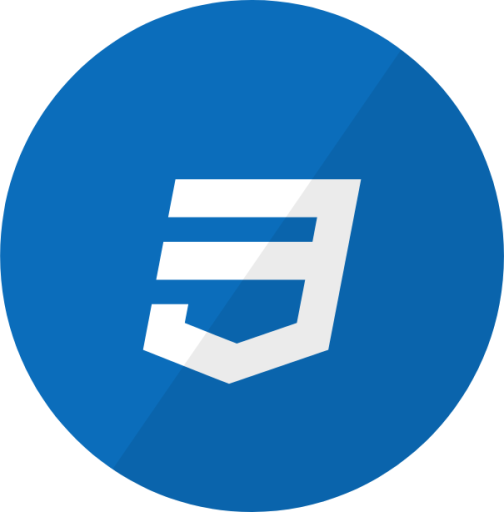
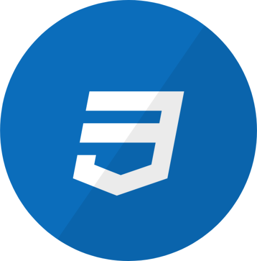

Minha Trajetória
Desde que comecei a programar, tive a oportunidade de desenvolver projetos para empresas, colocando em prática meus conhecimentos e adquirindo experiência real no mercado. Um dos projetos mais marcantes que desenvolvi foi o MRO, uma ferramenta que auxilia no crescimento de seguidores no Instagram. Para complementar essa solução, também desenvolvi um dashboard interativo, utilizando Node.js, HTML, JavaScript e CSS, permitindo aos usuários monitorarem seu progresso e gerenciarem suas estratégias de crescimento de forma eficiente.


 

Meus Projetos
MRO - Crescimento no Instagram
Uma ferramenta que auxilia no crescimento de seguidores no Instagram, com um dashboard interativo.
Ver ProjetoDashboard MRO
Dashboard desenvolvido com Node.js, HTML, CSS e JavaScript para monitoramento e controle do MRO.
Ver ProjetoMeus Cursos
Faculdade Atual
Nome da Faculdade: Faculdade Estácio de Sá
Cursando: Análise e Desenvolvimento de Sistemas - Estácio
Cursos Concluídos
Curso Em Video
- HTML 5: 120 Horas
- CSS3 3: 120 Horas
- JavaScript: 40 Horas